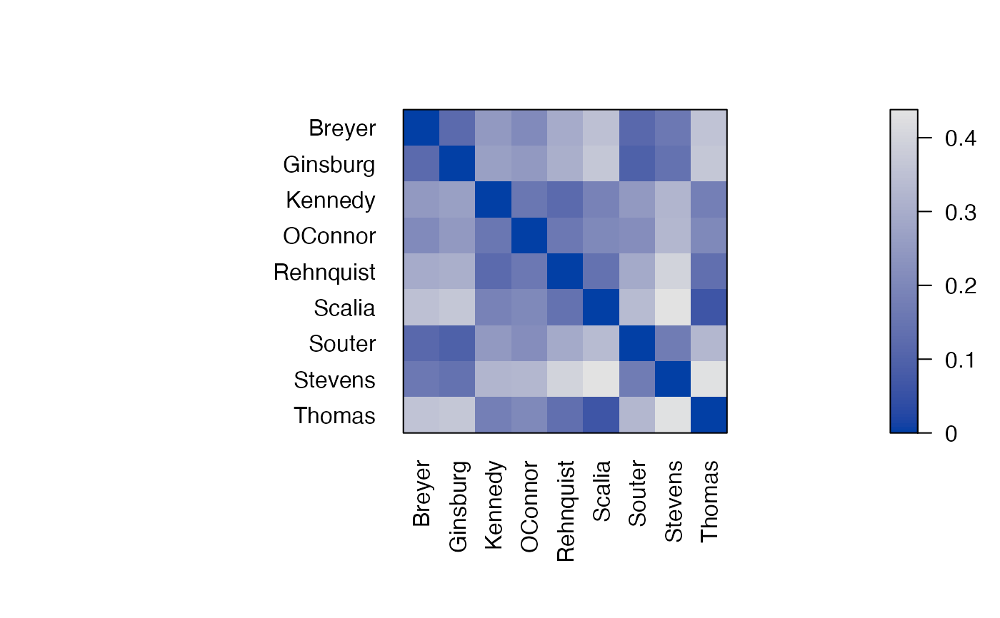
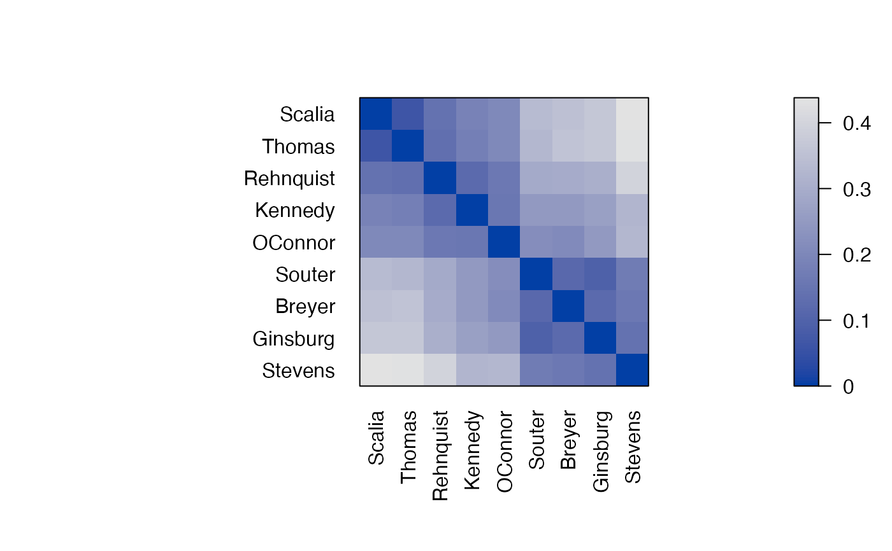

Contains a (a subset of the) decisions for the stable 8-yr period 1995-2002 of the second Rehnquist Supreme Court. Decisions are aggregated to the joint probability for disagreement between judges.
References
Sirovich, L. (2003). A pattern analysis of the second Rehnquist
U.S. Supreme Court. \emph{Proceedings of the National Academy of Sciences of the United
States of America,} 100, 7432-7437. \doi{10.1073/pnas.1132164100}Examples
data("SupremeCourt")
# joint probability of disagreement
SupremeCourt
#> Breyer Ginsburg Kennedy OConnor Rehnquist Scalia Souter Stevens
#> Breyer 0.00000 0.11966 0.25000 0.20940 0.29915 0.35256 0.11752 0.16239
#> Ginsburg 0.11966 0.00000 0.26790 0.25214 0.30769 0.36966 0.09615 0.14530
#> Kennedy 0.25000 0.26709 0.00000 0.15598 0.12179 0.18803 0.24786 0.32692
#> OConnor 0.20940 0.25214 0.15598 0.00000 0.16239 0.20726 0.22009 0.32906
#> Rehnquist 0.29915 0.30769 0.12179 0.16239 0.00000 0.14316 0.29274 0.40171
#> Scalia 0.35256 0.36966 0.18803 0.20726 0.14316 0.00000 0.33761 0.43803
#> Souter 0.11752 0.09615 0.24790 0.22009 0.29274 0.33761 0.00000 0.16880
#> Stevens 0.16239 0.14530 0.32692 0.32906 0.40171 0.43803 0.16880 0.00000
#> Thomas 0.35897 0.36752 0.17735 0.20513 0.13675 0.06624 0.33120 0.43590
#> Thomas
#> Breyer 0.35897
#> Ginsburg 0.36752
#> Kennedy 0.17735
#> OConnor 0.20513
#> Rehnquist 0.13675
#> Scalia 0.06624
#> Souter 0.33120
#> Stevens 0.43590
#> Thomas 0.00000
d <- as.dist(SupremeCourt)
o <- seriate(d)
o
#> object of class ‘ser_permutation’, ‘list’
#> contains permutation vectors for 1-mode data
#>
#> vector length seriation method
#> 1 9 Spectral
# judges in original alphabetical order
pimage(d, diag = TRUE, upper = TRUE)

# judges reordered by seriation based on similar decisions
pimage(d, o, diag = TRUE, upper = TRUE)

# Use optimal leaf ordering (hierarchical clustering with reordering)
# which uses a dendrogram
o <- seriate(d, method = "OLO")
o
#> object of class ‘ser_permutation’, ‘list’
#> contains permutation vectors for 1-mode data
#>
#> vector length seriation method
#> 1 9 OLO
plot(o[[1]])